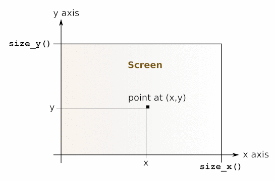

Chapter 28 The graphics library
The graphics library provides a set of portable drawing primitives. Drawing takes place in a separate window that is created when Graphics.open_graph is called.
Unix: This library is implemented under the X11 windows system. Programs that use the graphics library must be linked as follows:ocamlc other options graphics.cma other filesFor interactive use of the graphics library, do:ocamlmktop -o mytop graphics.cma ./mytopor (if dynamic linking of C libraries is supported on your platform), start ocaml and type #load "graphics.cma";;.Here are the graphics mode specifications supported by Graphics.open_graph on the X11 implementation of this library: the argument to Graphics.open_graph has the format "display-name geometry", where display-name is the name of the X-windows display to connect to, and geometry is a standard X-windows geometry specification. The two components are separated by a space. Either can be omitted, or both. Examples:
- Graphics.open_graph "foo:0"
- connects to the display foo:0 and creates a window with the default geometry
- Graphics.open_graph "foo:0 300x100+50-0"
- connects to the display foo:0 and creates a window 300 pixels wide by 100 pixels tall, at location (50,0)
- Graphics.open_graph " 300x100+50-0"
- connects to the default display and creates a window 300 pixels wide by 100 pixels tall, at location (50,0)
- Graphics.open_graph ""
- connects to the default display and creates a window with the default geometry.
Windows: This library is available both for standalone compiled programs and under the toplevel application ocamlwin.exe. For the latter, this library must be loaded in-core by typing#load "graphics.cma";;
The screen coordinates are interpreted as shown in the figure below. Notice that the coordinate system used is the same as in mathematics: y increases from the bottom of the screen to the top of the screen, and angles are measured counterclockwise (in degrees). Drawing is clipped to the screen.

The present documentation is copyright Institut National de Recherche en Informatique et en Automatique (INRIA). A complete version can be obtained from this page.